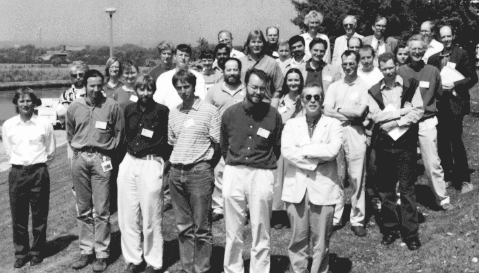

The morning session saw reports of recent results, obtained using SR data.
Dr. Erhrad Hohenester, of Birkbeck College, described the structure
of a pair of Follistatin-like EF-Hand Calcium Binding Domains in BM-40, a
secreted glycoprotein with activity in angiogenesis, wound healing and as
anti-adhesive. The 286 residues form two helix-loop-helix motifs which
coalesce hydrophobically with the assistance of a third helix. It had many
features similar to epidermal growth factor, e.g., a number of basic
residues lined up on one side of the follistatin domain.
Prof. Robert Liddington described the structure of the Protective Antigen (PA) of the Anthrax Toxin, a misnomer since it is the part of the toxin which effects entry of the lethal factor into the target cell. Structure solution required several cys-mutants, two of which were useful, and helped with chain tracing. PA had four domains: A receptor binding domain, an immuno-globulin like domain, a central domain probably involved in heptamer formation, and a 20 KD domain which is cleaved off post binding. The bound antingen makes a Porin like, all-beta sheet structure, probably involved with internalisation of the other two parts of the toxin, the Edema factor and the Lethal Factor.
Dr. Anthony Wilkinson discussed the use of optimised anomalous diffraction techniques to solve the structure of a Se-met mutant of the Sporulation INhibitor (sinI/sinR) complex, derived from Bacillus subtilis. The bacterium makes spores when conditions are unfavourable, with sinR and sinI controlling different parts of the cycle. Studying their interactions is important in devising methods of tailoring their activities to produce the desired effects. The structure of sinR was solved recently, but crystals of sinI diffracted poorly. The complex, though, diffracted to 2.1 Å Se-met residues were engineered into one, then the other part of the complex, and difference maps with wild-type crystals revealed the positions of these residues, and offered a handle on phasing the data set.
The afternoon session concentrated on station reports and technical issues.
Dr. Colin Nave reported on the current status of Station 7.2 (Trevor
Greenhough was not available on the day), and the planned upgrades. The
responsibility for the station had passed on to PX team at DL, after the
end of the grant to Keele University to run the station (awarded by the
SERC). The motors of the new mirror needed an overhaul. Plans include the
implementation of a new camera with self-alignment feed-back controls.
Dr. Liz Duke reported that Station 9.5 had been running well since Sep 96. The alignment telecope had finally succumbed after four years of exposure to the cryostream outflow, and was being overhauled. MAD experiments were running more easily on the station, with better wavelength resolution at the longer end of the spectrum.
Dr. Miroslav Papiz reported on the replacement mirror on Station 9.6, which took 6 to 7 months from being ordered. The delay was incurred by new tendering procedures. Together with a new long Si(111) monochromator, installed in Jan 97, the delivered intensity was routinely between 15 and 20 fold higher than the degraded mirror. A CCD detector was tested in Nov 96, and seemed to be well suited to most experiments at the station. A call for tender to buy a CCD detector was in progress. Other plans included a new Mar345 image plate, due July 97 (now installed); a large MRC-LMB detector, due Sep 97 (now delayed); a new 1200mm Si mirror that can be tilted more in the beam, in order to gather more intensity, due Jan 98.
Dr. Pierre Rizkallah reported on the proposed Fast Track stream for beamtime applications that arise during the allocation period. They should be turned round within 2 weeks, and the applicant should get an allocation quickly, for urgent experiments. The blue forms now do two functions: They are a 'Receipt of beamtime' token, and the reverse side has the User Questionnaire form, comments on the service can be (should be) made. Schedule changes and safety procedures were also highlighted. Publicity and feedback were more important than ever. It is very easy to contact members of staff by visiting URL http://www.dl.ac.uk/SRS/PX/people.html and clicking on the name of the person to be contacted. A plea was made for the mailing of publications lists from the users to p.j.rizkallah@dl.ac.uk, to be included in the URL http://www.dl.ac.uk/SRS/PX/publications.html. There was one condition: The work described must relate to data measured using the PX stations at the SRS.
Dr. Markus Sauerborn described the facilities available to users in the Biology Support Laboratory and what was being planned for the future. This resource had always been on offer to users, and this was an opportunity to seek out comments and opinions.
Dr. John Campbell summarised his efforts towards an upgrade of ROTGEN, a program that reads an orientation matrix from MOSFLM or DENZO, and can predict the overall completeness of data in a propsed rotation range. It can make suggestions for optimum data collection strategies, given a knowledge of the symmetry of the system. He also described a program encoding another autoindexing algorithm from a single oscillation image. This was a program still under development.
Dr. Andy Hopkirk showed the results of the User questionnaire returns. The sample contributing to the histogram of level of satisfaction, over the last three accounting years, was not a large one. However, there was a reasonably significant shift towards higher satisfaction as time went on. The level of 'no satisfaction' had declined into single percentage points. Efforts continue in order for this level to be reduced further, but more input was called for as well.
Dr. Colin Nave employed the well defined boundary conditions of the experiments of the future in order to impose design specifications for the Upgrade of the SRS and for DIAMOND: Crystal sizes, unit-cell dimensions, crystal perfection (rocking width) and accessible resolution limit the acceptable divergences. The multipole wiggler upgrade of the SRS, Line 14, will go a long way towards making larger virus samples accessible, while maintaining the suitability for the routine smaller-cell samples. In the process, it will deliver 5 to 20 times more intensity than what is available currently. DIAMOND designs incorporated generic beamlines, 3 of them suited to PX experiments. The undulator example was expected to deliver 50 times the flux of the present facilities, in a tenth of the divergence (dependent on the wavelength).
General Discussion was the last session of the day. The participants asked for a definite start date for DIAMOND first beam. They were pleased for the raised profile of MAD experiments at DL, after the recent successes at ESRF. The main finding was that the Specialist Users Group meeting is needed only once a year, as part of the General Users meeting in September. This was the last of the Spring meetings. With that in mind, the next meeting in Sep 97 promised to have a number of high calibre presentations, and there was a great resolve to turn out in large numbers this year.
Pierre Rizkallah
Daresbury Laboratory
 Click here to return to BCA homepage
Click here to return to BCA homepage